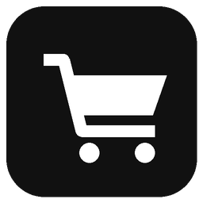

MiniMarket ProPunto de venta para minimarkets y bodegas: ventas rápidas con lector de código de barras, inventario, compras y reportes.
Descargar para WindowsEscanea, cobra en efectivo, tarjeta o Yape, y emite boleta o nota de venta en PDF.
Stock en tiempo real, alertas de stock bajo y kardex por producto.
Registra compras a proveedores y lleva tu cartera de clientes.
Tus datos se guardan en tu PC. No necesitas servidor.